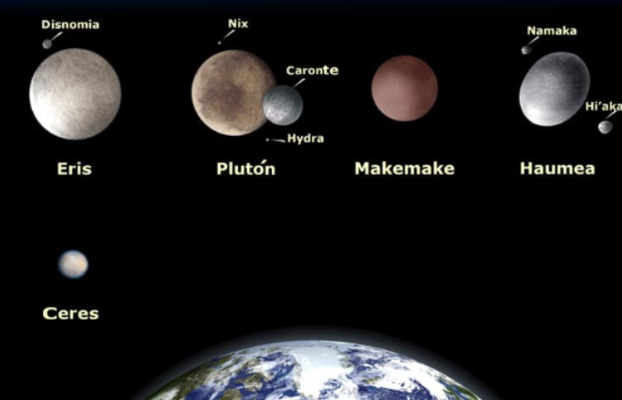

Otros elementos del Sistema Solar
Como hemos dicho al principio, ademas del Sol y los ocho planetass que forman el Sistema Solar, existen otros elementos que tambien hay que tener en cuenta.
Son pequeños planetas que tambien orbitan alrededor del Sol y NO son satélites de ningún otroplaneta. En nuestro Sistema Solar existen cinco:Ceres, Eris, Makemake,Haumea y plutón.

Se llama Satelite a un cuerpo que gira alrededor de otro que suele ser más grande. Son sólidos y carecen de atmósfera.
En el Sistema Solar los planetas poseen satelites, Si bien alrededor de la Tierra solo hay un Satelite natural: la Luna.
La luna es un cuerpo celeste rocoso y sin anillos. Los seres humanos la admiramos por su hermosura, por su cercania y porque brilla en el cielo. Debes saber que en realidad la luna es un planeta oscuro que no desprende luz, sino que refleja la luz que recibe del sol.
*Se llama Satelites artificiales a los fabricados y lanzados al espacio por los humanos para tomar todo tipo de datos sobre un planeta.
En el Sistema Solar hay otros elementos, como los asteroides, los cometas y los meteoritos.